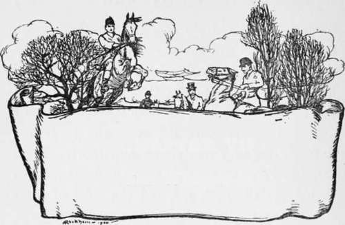

The Huntsman. Continued
Description
This section is from the book "Hunting: A Manual of Fox, Hare, Stag & Otter Hunting", by J. Otho Paget. Also available from Amazon: Hunting: A Manual of Fox, Hare, Stag & Otter Hunting.
The Huntsman. Continued
Unless a man who is hunting hounds has a certain amount of confidence in himself, he will never be able to act at a critical moment with that decision and promptness which the occasion requires. There must be nothing vacillating about a huntsman : he must make up his mind quickly and act at once on his inspiration. If, however, he is a man slow of thought, he had better take time to think than to rush off without any idea of what he intends doing. When hounds are at a check the fox is travelling on, and every second is of importance, but thoughtless haste will not help matters. The man who is always in a hurry will lose more time than he who is both deliberate and slow.
Beckford says a huntsman should be young, and I suppose by that he means a man should begin early ; but unfortunately there is no way of remaining young, and I don't imagine he would have advised getting rid of a man because he had lost his first youth. Wisdom comes with age, and the majority of huntsmen have lost their dash by the time they are ready to profit by their own experience. The young man who is full of nerve and keenness is likely to show sport with a good pack of hounds, even if he knows nothing about the game.
There are few men who do not begin to lose some of their nerve when they have passed forty ; but, of course, there are exceptions, and the only huntsman I ever knew who retained his riding to the end was Tom Firr. At the age of fifty-eight, in his last season with the Quorn, he was riding to hounds in as brilliant a fashion as when he first joined the pack five-and-twenty years before. How much longer he would have continued to ride over Leicestershire, had he not met with the accident which laid him on the shelf, it is of course impossible to say.
Future ages may produce huntsmen as good as Tom Firr, but we of his generation can never expect to see his equal. I consider he was as near perfection as it is possible to find anything in this world. He combined all those qualities which the ideal huntsman should possess. Hands, nerve, and seat made him a finished horseman. He sailed quietly over the biggest fences as if they were gaps, and he was such an excellent rider that you never noticed his riding. He was as quick as lightning, and yet was never in a hurry. He had the patience to let hounds hunt out a cold scent, and knew the exact moment when to press them on to a beaten fox. His voice and hound-language were perfect, and his cheer acted like a stimulant on the pack at the end of a hard day.
Firr was a man who would probably have reached the top of the tree in any other walk of life, for he had more brain-power than is allotted to the average man. His mind grasped a situation at once, and action followed thought with the rapidity of lightning. He had a marvellous intuition of the way a fox had gone, and often recovered the line by a bold cast when every one thought it hopeless. He trusted his hounds and was seldom disappointed. Such was the greatest huntsman of the century.
A good voice is certainly an advantage to a huntsman, though it is not altogether a necessity ; but I believe a harsh voice is as unpleasant to a hound as a discord is to a very sensitive human ear. Hound-language may be left to the individual taste, but I like every sound to have distinct reason and meaning in it. A tally-ho should never be used except when you see the fox, and wish to give the pack a view. When hounds are running, a cheer may be given occasionally to get the pack up to head, but it must be used with discretion, and with a very feeble scent it is better to be silent, as in that case the slightest sound may distract their attention. I have often heard huntsmen cheer hounds when they merely wanted to make a cast, and that, of course, is a great mistake. You may do it once or twice without much harm resulting ; but hounds will soon find you out, and then when you want them to fly to you at a critical moment, they will take no notice. It is an old saying that you may deceive a pack once, but not twice. A proper use of hound-language may be construed as using the right words or sounds at the right moment. As I have said elsewhere, hounds' hearing is very sensitive, and they will quickly distinguish the different notes in your voice, if you are always careful to use certain sounds for definite occasions. Some huntsmen will cheer hounds when they are merely drawing a covert ; but how they can expect them to know when they are being cheered on a scent is more than I can say. A cheer is an inspiriting sound, and should be used only to urge the pack to greater exertions at the end of a long run, or to get them together in a covert.
The great Mr. Jorrocks very truly remarks that, according to the judgment of the public, "untsmen are either 'eaven-born or hidiots,' and that ' every schoolboy can criticise their performance.' I must say I like to see a man out hunting take sufficient interest in the proceedings to watch what a huntsman does, and if he has been out before, he ought to have an opinion of his own ; but it is rather rash of him to criticise when he can be only partially acquainted with the circumstances of the case. It is generally those who know least about hunting who are ever ready to approve or condemn the methods of a huntsman.
The man who hunts a pack of fox-hounds must never lose his head—that is, however excited he may be, he must school himself to control his feelings, so that every action is governed by rapid thought and not by sudden impulse. The very keen man is, of course, the one most likely to be excited, but the habit of self-control is easily acquired. To make use of shooting, again, to illustrate my meaning : the good shot is quite as quick as the bad, yet the bad shot usually fires on the impulse, and the good one has trained himself to suppress that impulse. In one case the brain acts unconsciously and is not under control, whilst in the other it directs action by the will of its owner.
There is also another cause which makes men flurried at critical moments, and that is want of nerve ; but I have already said that good nerve is essential to a huntsman.
Returning to Beckford's list of attainments, we find he mentions that a huntsman should be ' good-tempered.' Unfortunately we cannot ask him for an explanation, or I should like to have questioned him on the subject. With all due deference to such an authority, I should say that it does not matter what sort of temper a man possesses, if he always has it under perfect control. There are moments when the man who hunts hounds is subject to the most trying ordeals, and the mildest-tempered is liable to become irritated. A huntsman must under every circumstance keep control over his temper, and he may be sure that directly he loses it he will lose his fox.
There is one quality it is desirable for a huntsman to possess, and that is being ' doggy' ; but it is a quality born with the man and can never be acquired. ' Doggy' is the only word which will properly express my meaning, and I take it to be that the man has a certain sympathetic understanding with the dog. I do not wish to infer that it is impossible to become a good huntsman without this quality, but the man who has it will have a greater influence over his hounds, and they will be quicker to perceive what he requires of them.
I have mentioned only a few of the many things that refer to the conduct of a huntsman in the field, and the tale is still half-told ; but it must not be forgotten that his duties in the kennel are even greater than those in the field. Under the heading of ' The Hound' I have already discussed the chief features of kennel management, and therefore I will not repeat it here.
It is not necessary that a huntsman should feed his hounds, at least not for the purpose of making them attached to him, because a hound, or any dog, will always leave the man who feeds him to follow the man who shows him sport. There are, however, other reasons why the huntsman should see the pack fed, and the chief of these is that the feeder, not having seen them hunt, cannot be such a good judge of what each may require.
A good feeder will relieve the huntsman of much responsibility ; but he ought, nevertheless, to see everything for himself when possible, or he will not be able to put his finger on the weak spot, if anything goes wrong. Of course, in the case of any establishment that hunts more than three days a week, the huntsman will be out when one pack is being fed, and therefore he must rely to a certain extent on the feeder.
A huntsman's duties are to breed, feed, and hunt hounds, which, if he does properly, will occupy every moment of his time the whole year round.

Continue to: